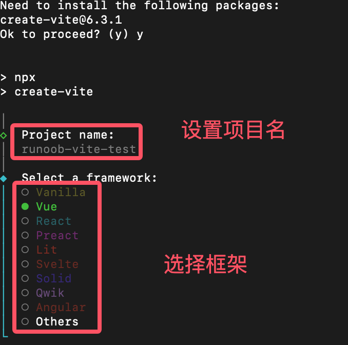
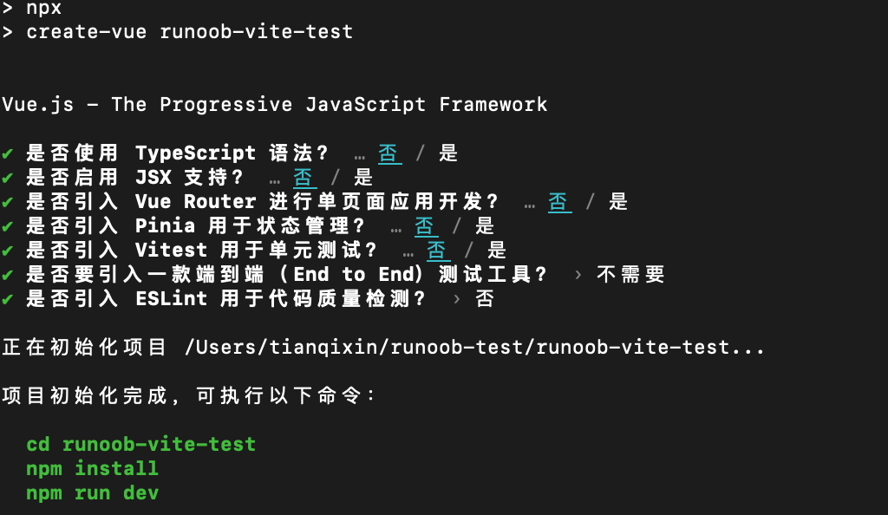
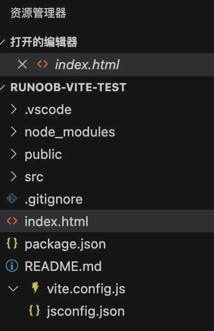
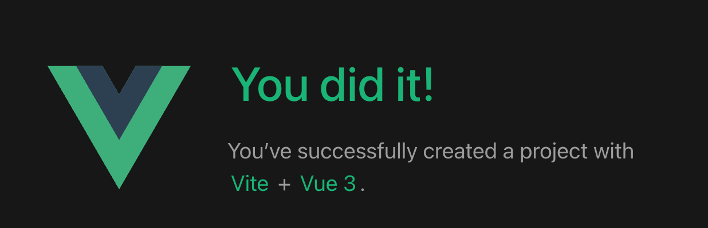
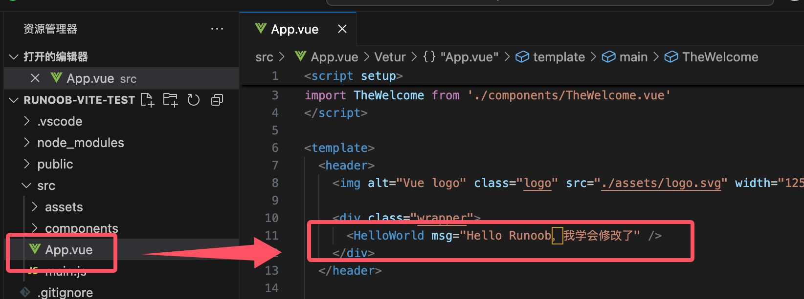
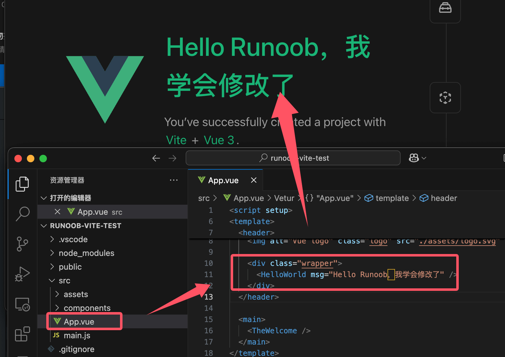
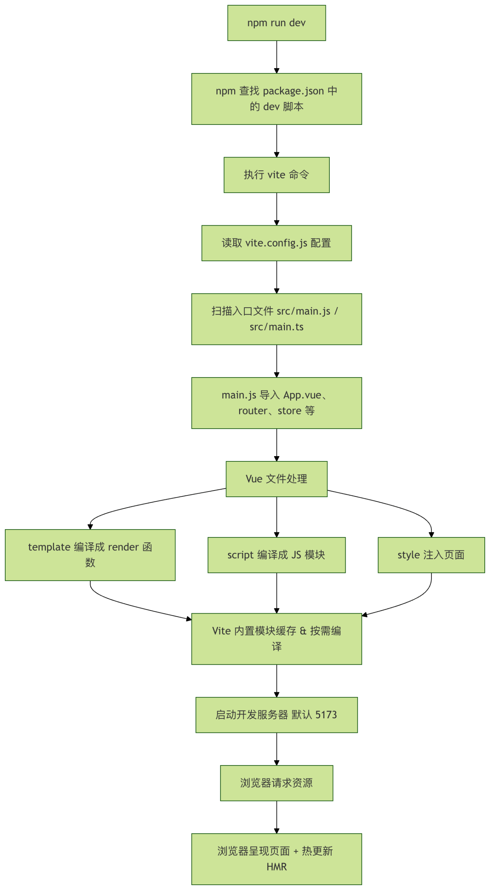

Vite チュートリアル
Vite は、現代ブラウザのネイティブ ES モジュールサポートを活用することで、高速な開発体験を提供することを目的とした、モダンなフロントエンドビルドツールです。
Vite は2つの部分で構成されています：
開発サーバー：ネイティブ ES モジュールに基づき、超高速のホットアップデートを提供します。
ビルドコマンド：Rollup を使用してコードをバンドルし、本番環境に適した最適化された静的アセットを生成します。
Vite には Node.js バージョン 18+ または 20+ が必要です。ただし、一部のテンプレートは正常に動作するためにより高い Node バージョンに依存している場合があります。パッケージマネージャーが警告を出したら、Node バージョンをアップグレードしてください。
従来のビルドツールの問題点
Vite が登場する前、フロントエンド開発では通常 Webpack などのビルドツールが使用されていました。これらのツールは強力ですが、いくつかの問題点もありました：
起動速度が遅い：プロジェクトが大きいほど起動時間が長くなり、開発効率に影響します。
ホットアップデートが遅い：コードを変更するたびにプロジェクト全体を再ビルドする必要があるため、ホットアップデートの速度が遅くなります。
設定が複雑：Webpack などのツールは設定が複雑で、学習コストが高くなります。
Vite の登場により従来のビルドツールの問題点が解決され、以下の利点があります：
超高速起動：ブラウザのネイティブ ES モジュールサポートを利用し、バンドル不要で起動速度が非常に高速です。
高速ホットアップデート：変更されたモジュールのみを更新し、アプリケーションの状態を維持して開発効率を向上させます。
豊富な機能：TypeScript、JSX、CSS などをサポートし、追加設定なしですぐに使用できます。
高い拡張性：プラグインシステムを通じて、他のツールやフレームワークを簡単に統合できます。
Vite の動作原理
Vite の動作原理は、開発モードと本番モードに分けられます：
開発モード：
Vite は開発サーバーを起動し、ブラウザが ES モジュールをネイティブにサポートする特性を利用して、ソースコードを直接読み込みます。
コードが変更されると、Vite は変更されたモジュールのみを更新し、ブラウザにホットアップデートを通知して、アプリケーションの状態を維持します。
本番モード：
Vite は Rollup を使用してコードをバンドルし、最適化された静的アセットファイルを生成します。
これらのファイルは、任意の静的ファイルサーバーにデプロイできます。
Vite の適用シーン
Vite はさまざまなプロジェクトに適しており、特に以下のものに適しています：
シングルページアプリケーション (SPA)：Vue、React プロジェクトなど。
静的ウェブサイト：ブログやドキュメントなどをすばやく構築できます。
ライブラリ開発：Vite のビルド機能を利用して、ライブラリを効率的に開発・バンドルできます。
Vite プロジェクトの作成
Vite は新しいプロジェクトを作成するための複数の方法を提供しています。最も簡単な方法はコマンドラインツールを使用することです。
ターミナルまたはコマンドラインツールを開き、次のコマンドを実行して新しい Vite プロジェクトを作成します：
npm create vite@latest
プロンプトに従ってプロジェクト名を入力し、テンプレートを選択します。
Vite は複数のテンプレートを提供しています。以下が含まれます：
vanilla:純粋な JavaScript プロジェクト
vue:Vue.js プロジェクト
react:React プロジェクト
preact:Preact プロジェクト
lit:Lit プロジェクト
svelte:Svelte プロジェクト

テンプレートを選択すると、Vite は自動的にプロジェクトディレクトリを作成して依存関係をインストールします。この章では Vue フレームワークを選択しました。
選択方法がよくわからない場合は、そのまま Enter を押し続けても構いません。ウィンドウに出力される情報は次のようになります：

Vite を使用して作成されたプロジェクトには、通常、以下のファイルとフォルダーが含まれます：

node_modules:プロジェクトの依存関係を格納するフォルダー。
public:画像やフォントなどの静的アセットを格納するフォルダー。
src:プロジェクトのソースコードを格納するフォルダー。
main.js:プロジェクトのエントリーファイル。
App.vue:Vue プロジェクトのルートコンポーネント。
index.html:プロジェクトのホームページ。
package.json:プロジェクトの設定ファイル。プロジェクト情報、依存関係、スクリプトコマンドが含まれます。
vite.config.js:Vite の設定ファイル。Vite のさまざまなオプションを設定するために使用します。
開発サーバーの起動
プロジェクトディレクトリに移動します：
cd runoob-vite-test
依存関係をインストールします：
npm install次のコマンドを実行して開発サーバーを起動します：
npm run dev
実行すると、次のような情報が表示されます：
VITE v6.2.0 ready in 684 ms ➜ Local: http://localhost:5173/ ➜ Network: use --host to expose ➜ Vue DevTools: Open http://localhost:5173/__devtools__/ as a separate window ➜ Vue DevTools: Press Option(⌥)+Shift(⇧)+D in App to toggle the Vue DevTools ➜ press h + enter to show help
Vite はローカル開発サーバーを起動し、アクセスアドレスを表示します。例えばhttp://localhost:5173、ポートは vite.config.js で設定変更できます。
ブラウザでそのアドレスにアクセスすると、Vite プロジェクトを確認できます。

コードを変更して効果を確認する
src/App.vue ファイルを開き、コードを変更してファイルを保存します。

ブラウザが自動的にリフレッシュされ、変更後の効果が表示されるのがわかります。

Vite の起動プロセス
package.json 内で定義：
"scripts": {
"dev": "vite"
}
実行npm run devコマンドを実行すると、npm はローカルの node_modules/.bin/vite 実行ファイルを探し、このファイルを呼び出して開発サーバーを起動します。
Vite の起動プロセスの核心的なステップ：
-
設定の読み込み
- デフォルトではルートディレクトリの
vite.config.js或vite.config.ts。 - 設定には以下が含まれます
root、alias、プラグイン、ポートなど。
- デフォルトではルートディレクトリの
-
依存関係の解析
- スキャン
src/main.js（またはsrc/main.ts）をエントリーファイルとします。 - ES モジュールの依存関係を分析します。
- インポートパス（例：
@/components/Hello.vue）のエイリアスを解決します。
- スキャン
-
開発サーバーの起動
- HTTP サーバーを作成し、デフォルトポート
5173。 - ホットアップデート（HMR, Hot Module Replacement）機能を提供します。
- Vue ファイル、JS/TS、CSS などを、内蔵の Vite プラグインを通じてブラウザが認識できるコードに変換します。
- HTTP サーバーを作成し、デフォルトポート
ファイル呼び出しの順序（典型的な Vue3 プロジェクトを例に）
npm run dev
↓
vite 命令执行
↓
读取 vite.config.js
↓
扫描入口文件 src/main.js / src/main.ts
↓
main.js 导入 App.vue 和 router/store 等
↓
App.vue -> template + script + style 分别由 Vite Vue 插件处理
↓
浏览器请求资源时，Vite 进行按需编译和模块缓存
↓
页面呈现，支持 HMR 热更新
重要なポイント
- エントリーファイル：
main.js或main.ts、Vue アプリケーションの起点です。 - モジュール解決：Vite は
esbuildJS/TS を高速に処理し、Vue 単一ファイルコンポーネントも処理します。 - エイリアス解決：
@対応src/、vite.config.js内のresolve.aliasで設定します。 - ホットアップデート：変更する
.vueファイルまたは JS/TS ファイルを変更すると、Vite はページ全体をリフレッシュせずにモジュールを部分的に更新します。

Vite のよく使う機能
Vite は豊富な機能を提供しており、フロントエンドアプリケーションをより効率的に開発するのに役立ちます。
1. CSS プリプロセッサを使用する
Vite は Sass、Less、Stylus などの CSS プリプロセッサをサポートしています。
これらのプリプロセッサを使用するには、まず対応する依存関係をインストールする必要があります：
Sass:
npm install -D sass
Less:
npm install -D less
Stylus:
npm install -D stylus
インストールが完了すると、プロジェクトで対応する CSS プリプロセッサを使用できます。
例えば、Vue プロジェクトでは、<style lang="scss">を使用して Sass コードを記述できます。
2. TypeScript を使用する
Vite は TypeScript でコードを記述することをサポートしています。
TypeScript を使用するには、まず TypeScript をインストールする必要があります：
npm install -D typescript
インストールが完了すると、.js ファイルを .ts ファイルに名前変更し、TypeScript 構文でコードを記述できます。
Vite は TypeScript コードを自動的にコンパイルします。
3. 静的アセットを使用する
Vite は画像、フォントなどの静的アセットの使用をサポートしています。
これらのリソースを public ディレクトリに置くか、import 文を使用してリソースをインポートできます。
public ディレクトリの使用方法は？
画像 logo.png を public ディレクトリに置き、コード内で /logo.png を使用して画像を参照します。
4. import 文を使用する
例
const img = document.createElement('img')
img.src = logo
document.body.appendChild(img)
5. 環境変数を使用する
Vite は環境変数を使用して異なる環境を構成できます。
次を使用できます.envファイルで環境変数を定義します。
.env ファイルを作成:
VITE_API_URL=https://api.example.com
コード内で環境変数を使用:
const apiUrl = import.meta.env.VITE_API_URL
6. プラグインを使用する
Vite には豊富なプラグインエコシステムがあり、Vite の機能を拡張できます。
Vite プラグインを使用して、コード圧縮、画像最適化、コード分析などの機能を実装できます。
プラグインをインストール:
npm install -D vite-plugin-xxx
プラグインを構成:
vite.config.js ファイルでプラグインを構成します：
import xxx from 'vite-plugin-xxx'
export default {
plugins: [
xxx()
]
}
vite.config.js は Vite プロジェクトの中心的な設定ファイルです。vite.config.js を設定することで、開発サーバー、ビルドオプション、プラグインなど、Vite のさまざまな動作をカスタマイズできます。
以下は vite.config.js の設定例です：
vite.config.js の設定説明
import { defineConfig } from 'vite';
// Vue プロジェクトをサポートするために Vue プラグインをインポートします
import vue from '@vitejs/plugin-vue';
// パスを処理するために path モジュールをインポートします
import path from 'path';
// defineConfig を使用して Vite 設定を定義します
export default defineConfig({
// プロジェクトのルートディレクトリ。デフォルトは現在の作業ディレクトリです
root: path.resolve(__dirname, './src'),
// ベースパス。サブパスにデプロイする場合に使用します
base: '/my-app/',
// 開発サーバー設定
server: {
// 開発サーバーのポートを指定します
port: 3000,
// ブラウザを自動的に開くかどうか
open: true,
// クロスオリジン問題を解決するためのプロキシサーバーを設定します
proxy: {
'/api': {
target: 'http://localhost:8080', // ターゲットサーバーのアドレス
changeOrigin: true, // リクエストの起点を変更するかどうか
rewrite: (path) => path.replace(/^\/api/, ''), // リクエストパスを書き換えます
},
},
},
// ビルド設定
build: {
// 出力ディレクトリを指定します
outDir: path.resolve(__dirname, '../dist'),
// 静的リソースディレクトリを指定します
assetsDir: 'static',
// sourcemap ファイルを生成するかどうか
sourcemap: true,
// コードを圧縮するかどうか
minify: 'terser', // terser を使用してコードを圧縮します
// Rollup オプションを設定します
rollupOptions: {
// 外部依存関係を設定します
external: ['lodash'],
// 出力形式を設定します
output: {
manualChunks: {
// lodash を個別にバンドルします
lodash: ['lodash'],
},
},
},
},
// プラグイン設定
plugins: [
// Vue プラグインを使用します
vue(),
],
// モジュール解決設定
resolve: {
// パスエイリアスを設定します
alias: {
'@': path.resolve(__dirname, './src'), // @ を src ディレクトリにマッピングします
},
},
// CSS 設定
css: {
// CSS プリプロセッサオプションを設定します
preprocessorOptions: {
scss: {
// SCSS 変数をグローバルに注入します
additionalData: `@import "@/styles/variables.scss";`,
},
},
},
// 環境変数設定
envPrefix: 'VITE_', // 環境変数のプレフィックス。デフォルトは VITE_ です
});
root
プロジェクトのルートディレクトリを指定します。デフォルトは現在の作業ディレクトリです。ここでは./srcに設定されており、プロジェクトのソースコードがsrcディレクトリに置かれていることを示します。base
プロジェクトのベースパスを指定します。プロジェクトがサブパスにデプロイされる場合に適用されます。例えば、プロジェクトがhttps://example.com/my-app/にデプロイされる場合、 に設定します。/my-app/。server
開発サーバー設定：port：開発サーバーのポート番号を指定します。open：開発サーバー起動時にブラウザを自動的に開くかどうか。proxy：クロスオリジン問題を解決するためのプロキシサーバーを設定します。例えば、/apiで始まるリクエストを にプロキシします。http://localhost:8080。
build
ビルド設定：outDir：ビルド出力のディレクトリを指定します。assetsDir：静的リソース（画像、フォントなど）の保存ディレクトリを指定します。sourcemap：デバッグを容易にするために sourcemap ファイルを生成するかどうか。minify：コードを圧縮するかどうか。terserはデフォルトの圧縮ツールです。rollupOptions：外部依存関係やコード分割など、Rollup のバンドルオプションを設定します。
plugins
Vite プラグインを設定します。ここでは@vitejs/plugin-vueプラグインを使用して、Vue プロジェクトをサポートしています。resolve.alias
パスエイリアスを設定します。例えば、@をsrcディレクトリにマッピングして、コード内で参照しやすくします。css.preprocessorOptions
CSS プリプロセッサオプションを設定します。例えば、SCSS 変数ファイルをグローバルに注入します。envPrefix
環境変数のプレフィックスを設定します。デフォルトでは、Vite はVITE_で始まる環境変数のみを読み込みます。
クリックしてノートを共有
ノートはこの記事の内容の拡張である必要があります！
記事の投稿は、ここをクリック
登録招待コードの取得方法
ノートを共有する前にログインが必要です！
登録招待コードの取得方法